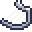

<tr-image property="staff">
    <tr-image-option class-to-set="sprite sprite-harp in-active" class="sprite sprite-harp in-active" path="../shared/images/icons/blank.svg" label="Harp"></tr-image-option>
    <tr-image-option class-to-set="sprite sprite-harp" class="sprite sprite-harp" path="../shared/images/icons/blank.svg" label="Harp"></tr-image-option>
    <tr-image-option class-to-set="sprite sprite-staff-with-rain" class="sprite sprite-staff-with-rain" path="../shared/images/icons/blank.svg" label="Staff"></tr-image-option>
    <tr-label property="staff"></tr-label>
</tr-image>

<!-- <figure>
    <tr-toggle-class property="staff" toggle-class="active">
        
    </tr-toggle-class>
    <figcaption>Staff</figcaption>
</figure> -->
<figure>
    <tr-toggle-class property="stones" toggle-class="active">
        
    </tr-toggle-class>
    <figcaption>Stones</figcaption>
</figure>
<figure class="token-fig">
    <tr-toggle-class property="token" toggle-class="active">
        
    </tr-toggle-class>
    <figcaption>Token</figcaption>
</figure>
<!-- 
<figure>
    <tr-toggle-class property="harp" toggle-class="active">
        
    </tr-toggle-class>
    <figcaption>Harp</figcaption>
</figure> -->

<tr-image property="drop">
    <tr-image-option class-to-set="sprite sprite-drop in-active" class="sprite sprite-drop in-active" path="../shared/images/icons/blank.svg" label="drop"></tr-image-option>
    <tr-image-option class-to-set="sprite sprite-drop" class="sprite sprite-drop" path="../shared/images/icons/blank.svg" label="drop"></tr-image-option>
    <tr-image-option class-to-set="sprite sprite-bridge-transparent" class="sprite sprite-bridge-transparent" path="../shared/images/icons/blank.svg" label="bridge"></tr-image-option>
    <tr-label property="drop"></tr-label>
</tr-image>
<!-- <figure>
    <tr-toggle-class property="drop" toggle-class="active">
        
    </tr-toggle-class>
    <figcaption>drop</figcaption>
</figure> -->

<tr-image property="key" style="grid-column: 1;">
    <tr-image-option class-to-set="sprite sprite-key in-active" class="sprite sprite-key in-active" path="../shared/images/icons/blank.svg"></tr-image-option>
    <tr-image-option class-to-set="sprite sprite-key" class="sprite sprite-key" path="../shared/images/icons/blank.svg"></tr-image-option>
    <tr-image-option class-to-set="sprite sprite-key" class="sprite sprite-key" path="../shared/images/icons/blank.svg" label="&#8734;"></tr-image-option>
    <tr-label property="key"></tr-label>
</tr-image>

<figure>
    <tr-toggle-class property="gps" toggle-class="active">
        
    </tr-toggle-class>
    <figcaption>gwaelin</figcaption>
</figure>
<figure>
    <tr-toggle-class property="flute" toggle-class="active">
        
    </tr-toggle-class>
    <figcaption>Flute</figcaption>
</figure>
    <!-- <figure>
        <tr-toggle-class property="belt" toggle-class="active">
            
        </tr-toggle-class>
        <figcaption>belt</figcaption>
    </figure> -->
